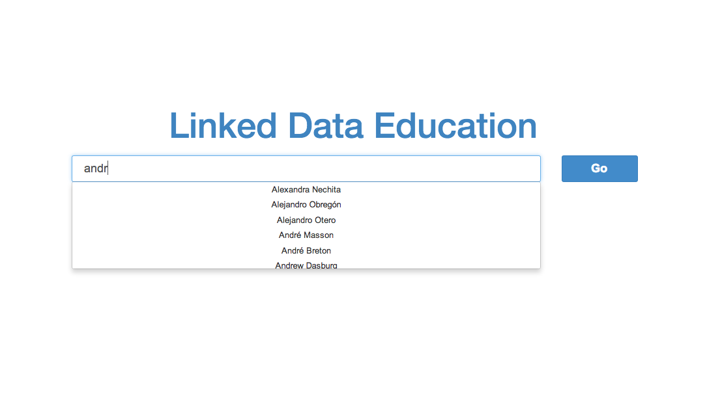
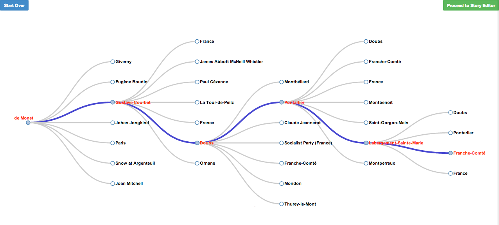
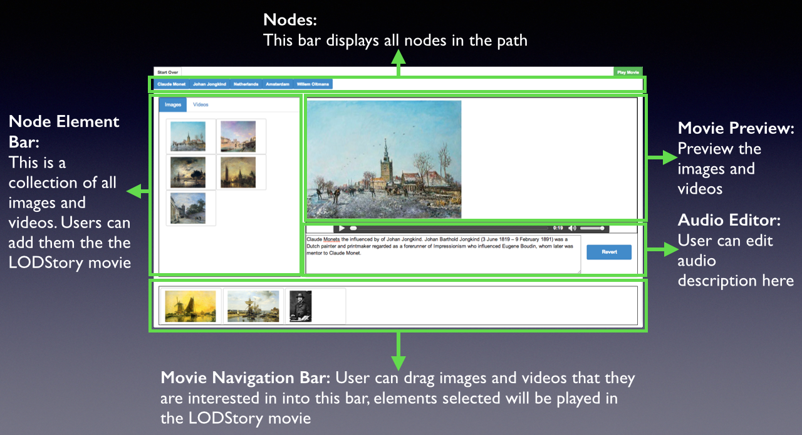

LODStories
Learning About Art by Building Multimedia Stories
Introduction
LODStories is an engaging application where people learn about art while constructing multimedia stories about art. LODStories mines the Linked Open Data cloud to discover interesting connections between artworks, artists, places and ideas. LODStories guides users to construct a storyboard that connects the entities in an interesting way. It then fetches text, images and videos that users can arrange to create a multimedia story, and finally constructs a narrated video that users can edit and then publish to tell their story. The process is fun, and students learn about art and its connection to the world they live in. The paper describes the architecture of the system and the algorithms to make the exploration entertaining and educational.
Step 1: Search for Art...

Type the name of the artist or the artwork that you are interested in, and click GO, the app will find other nodes that have relationship with the one you searched, and create path accordingly.
Step 2: Explore the Path...

Click the node you are interested in, and the system will other nodes that is connected to the node you clicked. You may explore step by step, and finally create a path showing how things are connected.
When you click "Proceed to Story Editor", the path from the starting node to the last node you clicked will be passed to the story editor.
When you click "Start Over", you will be directed to the search page.
Step 3: Edit Your Story...

Click each node and you can edit the story about that node. You may drag interesting videos and images from the collection on the left to the bottom bar, or edit the description text according to your own like. You can listen to the audio description after making changes. Click "Play Movie" to play your story. You don't have to edit all the nodes. The nodes your left blank will be added with default images and videos.